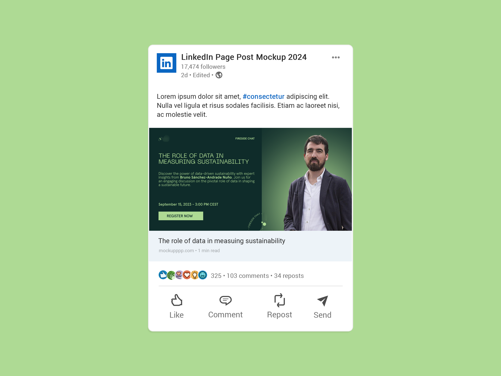

INTRO
Il progetto aveva l’obiettivo di creare contenuti dal forte impatto visivo per promuovere una piattaforma SaaS specializzata nell’analisi di dati satellitari e nella valutazione dei rischi climatici, rivolgendosi principalmente a un pubblico di investitori in infrastrutture. Le grafiche LinkedIn comprendevano un carosello promozionale e un banner per una live chat con un ospite di rilievo. L’obiettivo era quello di aumentare la visibilità del brand e trasmettere la competenza tecnologica della piattaforma in modo chiaro e professionale.
Il progetto aveva l’obiettivo di creare contenuti dal forte impatto visivo per promuovere una piattaforma SaaS specializzata nell’analisi di dati satellitari e nella valutazione dei rischi climatici, rivolgendosi principalmente a un pubblico di investitori in infrastrutture. Le grafiche LinkedIn comprendevano un carosello promozionale e un banner per una live chat con un ospite di rilievo. L’obiettivo era quello di aumentare la visibilità del brand e trasmettere la competenza tecnologica della piattaforma in modo chiaro e professionale.

LA SFIDA
Il progetto presentava alcune sfide significative, principalmente legate all’assenza di linee guida o di una brand identity definita. In assenza di elementi visivi preesistenti, è stato necessario sviluppare un’identità visiva di base per la startup, utilizzando colori e font che rappresentassero l’aspetto tecnologico e innovativo del brand. La scelta della palette e dei caratteri tipografici è stata fondamentale per creare un’identità coerente e moderna, senza allontanarsi dal contesto professionale e scientifico del settore.
Il progetto presentava alcune sfide significative, principalmente legate all’assenza di linee guida o di una brand identity definita. In assenza di elementi visivi preesistenti, è stato necessario sviluppare un’identità visiva di base per la startup, utilizzando colori e font che rappresentassero l’aspetto tecnologico e innovativo del brand. La scelta della palette e dei caratteri tipografici è stata fondamentale per creare un’identità coerente e moderna, senza allontanarsi dal contesto professionale e scientifico del settore.

LA SOLUZIONE
La selezione di una palette di due tonalità di verde è stata essenziale per creare un’identità visiva efficace e per simboleggiare stabilità e connessione con il tema ambientale. Il font Neue Machina è stato utilizzato per i titoli, richiamando l’idea di tecnologia, mentre Aperçu è stato scelto per i testi, per la sua leggibilità e versatilità nel settore SaaS. Le immagini stock di dati satellitari sono state elaborate per garantire alta qualità e coerenza visiva.
L'integrazione del logo aziendale come elemento grafico ripetuto in varie forme insieme all'aggiunta di figure geometriche ispirate al design tecnologico hanno mantenuto una narrativa visiva coerente. Ogni slide del carosello era progettata per guidare l’utente attraverso il messaggio chiave, concludendosi con un invito chiaro all’azione.
La selezione di una palette di due tonalità di verde è stata essenziale per creare un’identità visiva efficace e per simboleggiare stabilità e connessione con il tema ambientale. Il font Neue Machina è stato utilizzato per i titoli, richiamando l’idea di tecnologia, mentre Aperçu è stato scelto per i testi, per la sua leggibilità e versatilità nel settore SaaS. Le immagini stock di dati satellitari sono state elaborate per garantire alta qualità e coerenza visiva.
L'integrazione del logo aziendale come elemento grafico ripetuto in varie forme insieme all'aggiunta di figure geometriche ispirate al design tecnologico hanno mantenuto una narrativa visiva coerente. Ogni slide del carosello era progettata per guidare l’utente attraverso il messaggio chiave, concludendosi con un invito chiaro all’azione.

RISULTATO
La campagna ha contribuito a rafforzare la presenza online del brand e a migliorare la riconoscibilità visiva della piattaforma nel settore. La combinazione di caroselli informativi e grafiche promozionali ha permesso di presentare i servizi in modo moderno ed elegante, trasmettendo l’affidabilità della piattaforma e la sua capacità di supportare decisioni complesse attraverso dati avanzati. I contenuti sono stati accolti positivamente per la loro capacità di tradurre concetti tecnici in visual efficaci.
La campagna ha contribuito a rafforzare la presenza online del brand e a migliorare la riconoscibilità visiva della piattaforma nel settore. La combinazione di caroselli informativi e grafiche promozionali ha permesso di presentare i servizi in modo moderno ed elegante, trasmettendo l’affidabilità della piattaforma e la sua capacità di supportare decisioni complesse attraverso dati avanzati. I contenuti sono stati accolti positivamente per la loro capacità di tradurre concetti tecnici in visual efficaci.